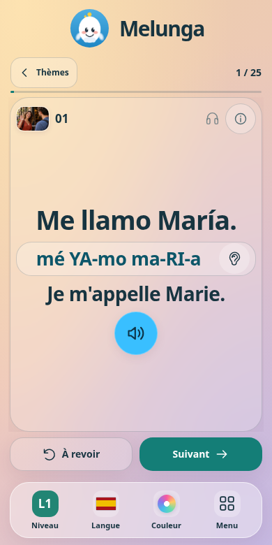
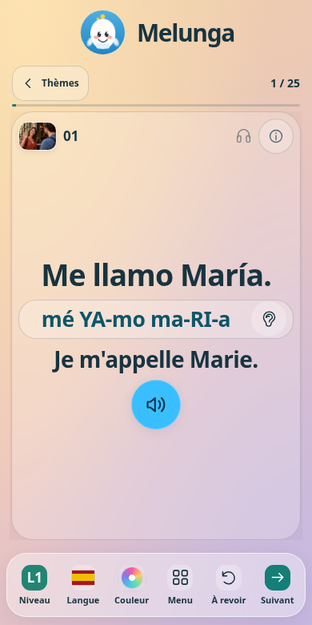
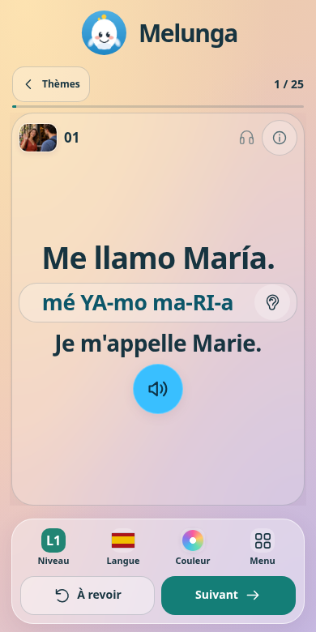
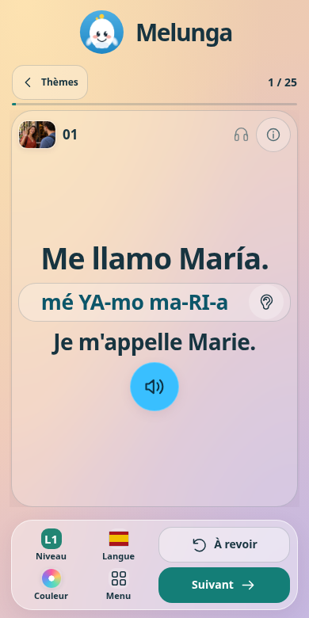

Melunga · maquettes mobiles
À revoir et Suivant dans la même barre
Le dock translucide choisi, puis trois nouvelles présentations. Niveau, Langue, Couleur et Menu restent disponibles.
Repère · Dock choisi

Le dock retenu, avec À revoir et Suivant encore placés juste au-dessus.

A · Une rangée

Les six commandes sur une ligne, dans une barre compacte.

B · Deux rangées
Conseillée
Les réglages en haut, puis deux grands boutons À revoir et Suivant.

C · Actions à droite

Les réglages à gauche et les deux actions à droite, près du pouce droit.